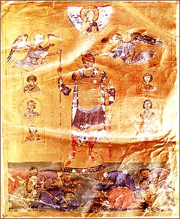

Basil II was crowned emperor of the Byzantine Empire in 960, when he was only 2 years old. His mother and other guardians ruled for him until he was old enough to take the throne in 976.
Humiliating defeat
The Bulgarians under Basil’s rule rebelled and almost wiped out Basil’s army in 986. The emperor swore vengeance against the entire Bulgar nation. Basil, a capable administrator, then rebuilt his army and went on to create the most powerful empire in Europe.
Terrible revenge
In 1014, Basil defeated the Bulgarian army in battle and captured 15,000 of their soldiers. In revenge for his defeat 28 years earlier, he ordered that all the prisoners be blinded. Only one man out of every hundred was allowed to keep the sight in one eye to lead the others back to Bulgaria. Basil thus acquired the nickname "Bulgaroctonus," which means "slayer of Bulgarians." In 1018, Basil completed the conquest of Bulgaria and made it part of the Byzantine Empire.

Basil II
SCALA/Art Resource